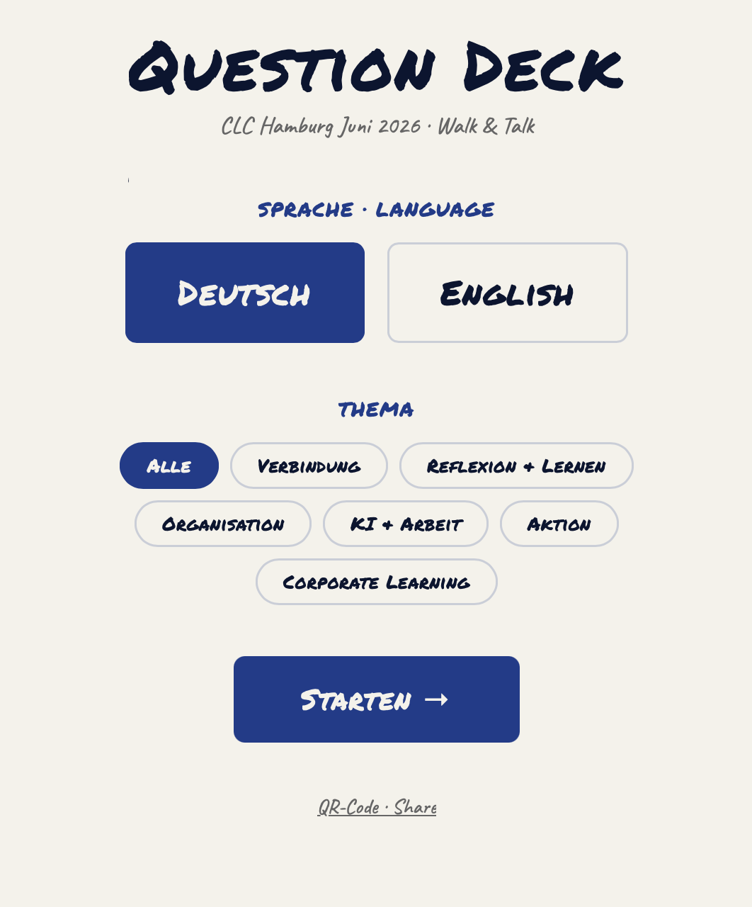
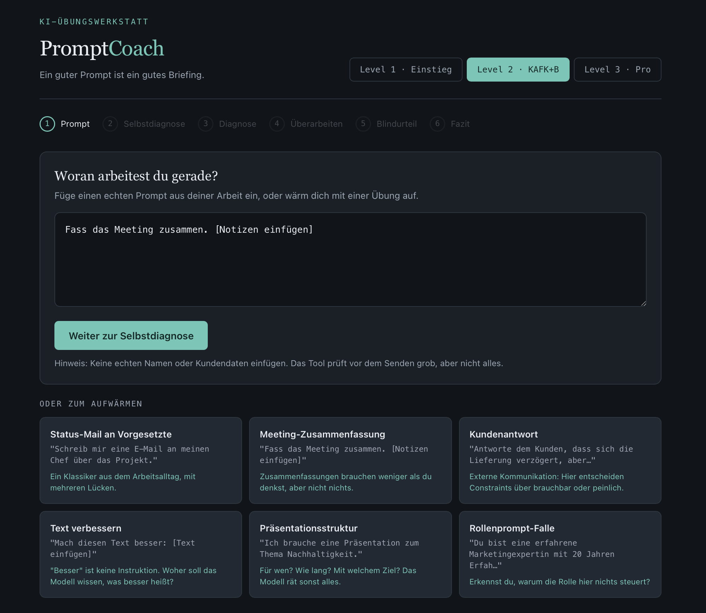
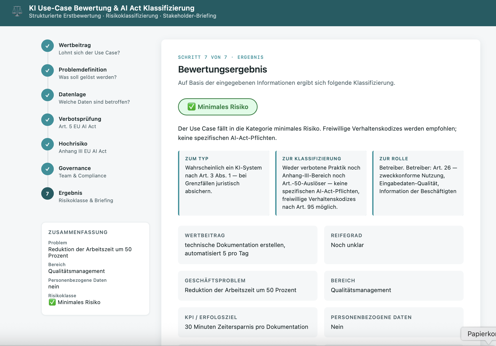
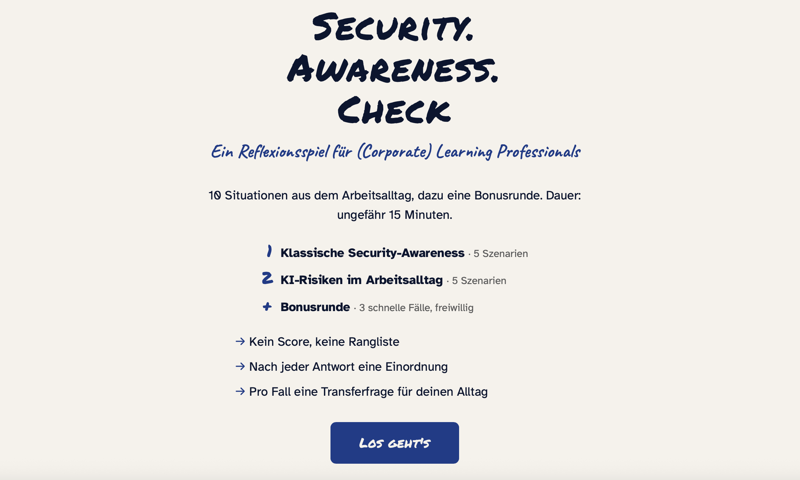

Question Deck
Fragenkarten für Gesprächseinstiege, gebaut für die Corporate Learning Community Hamburg. Die Idee dahinter: Gruppen arbeiten besser, wenn sie erst miteinander reden. Verbindung kommt vor Inhalt.
Deine Redaktion nutzt KI. Wer prüft die Quellen, wer beurteilt die Ergebnisse? Ich vermittle, wie Redaktionen und Forschungsteams KI in ihre Recherche einbauen, ohne blind auf den Output zu vertrauen.
Yvonne Pöppelbaum
Publizistische Lehre für KI-gestützte Recherche
Wer sie nutzen will, muss sie sauber steuern. Deshalb beginnt meine Arbeit vor den Tools: bei den Aufgaben, die Dein Team tatsächlich hat. Was KI kann, gehört ins Training. Was sie nicht kann, genauso. Das Urteil bleibt beim Menschen.
Halbtags bis mehrtägig: Redaktionen, Forschungsteams und Bildungseinrichtungen lernen an eigenen Rechercheaufgaben, wie sie Quellen prüfen, Halluzinationen erkennen und Belege sauber dokumentieren.
Mehrmonatige Blended-Learning-Programme: Webinare, Aufgaben zwischen den Terminen, Live-Sessions. Ich baue den Bogen von der Bedarfsanalyse bis zur Auswertung.
Workshops, Webinare, Community-Formate. Ich gestalte den Raum so, dass Gruppen mit unterschiedlichem Vorwissen ins Arbeiten kommen.
Meine Referenzpunkte kommen aus Redaktionen: Faktendruck, Zeitdruck, gesunde KI-Skepsis. Genau dort setzt meine Lehre an.
Zwischen den Schritten urteilt ein Mensch.
Wer KI sofort produzieren lässt, bekommt plausiblen Text mit Lücken. Deshalb arbeite ich in vier Schritten: erst analysieren, dann prüfen und entscheiden, dann produzieren, dann gegen Kriterien testen. Diese Sequenz steckt in jedem meiner Trainings. Und in dieser Website: Sie entstand genau so.
Ich baue kleine Werkzeuge, die je eine Lernidee tragen. Klick rein.

Fragenkarten für Gesprächseinstiege, gebaut für die Corporate Learning Community Hamburg. Die Idee dahinter: Gruppen arbeiten besser, wenn sie erst miteinander reden. Verbindung kommt vor Inhalt.

Eine Übungswerkstatt für Prompts. Ich gebe einen Prompt ein, das Tool zeigt Lücken nach einem festen Raster, ich arbeite sie nach. Am Schluss vergleiche ich beide Ergebnisse blind und entscheide selbst, welches besser funktioniert.
→ Ausprobieren Ruft Claude live auf. Du meldest dich kurz an, um es zu nutzen.

Ich beschreibe ein KI-Vorhaben in sieben Schritten, das Tool ordnet es in die Risikoklassen des EU AI Act ein und macht daraus ein Briefing für Stakeholder. Die Idee dahinter: erst einordnen, dann bauen. Das Urteil bleibt beim Menschen.

Ein Reflexionsspiel: 13 Situationen aus dem Arbeitsalltag, von Phishing bis zu KI-Risiken. Kein Score, keine Rangliste. Nach jeder Antwort gibt es eine Einordnung und eine Transferfrage für den eigenen Alltag. Das Leitmotiv: KI arbeitet. Der Mensch urteilt.
Ich bringe Menschen ohne Technik-Hintergrund dazu, KI im Arbeitsalltag einzusetzen. Gelernte Journalistin, praxiserprobte Entwicklerin für Lernprogramme, Workshops, KI-Makerdays und Blended-Learning-Formate. Co-Regioleitung der Corporate Learning Community in Hamburg. 2026 abgeschlossen: Vollzeit-Ausbildung zur agilen KI-Managerin (DEKRA/WBS) & AI DONE RIGHT (Barbara Lampl). Ich mag Automatisierungen, interessiere mich für Security Awareness Facilitation und suche ausdauernd nach schlauen Lösungen. Seit 2026 begleite ich mit YP Learning Design for AI Adoption Teams bei der KI-Einführung und agilen Transformation. Themen: KI für die Recherche, Security Awareness für Journalist*innen, Advanced Prompting, Claude Code und GitHub.
„Vorher hatten wir KI im Team nur als bessere Suchmaschine genutzt, jetzt wissen wir, wie man sie strukturiert einsetzt: erst prüfen, dann arbeiten lassen, dann kontrollieren. Man merkt deutlich, dass hier eine fundierte Methode und journalistische Genauigkeit dahinterstehen. Wir arbeiten seitdem als Team spürbar strukturierter zusammen. Wir werden definitiv wieder auf Yvonne zukommen, sobald wir bereit für den nächsten Schritt sind. Klare Empfehlung.“
Mentorin beim größten KI-Hackathon für Frauen in Deutschland (laut AI.Women) mit 300 Teilnehmerinnen (GitHub, Claude Code, Prompting, Produktentwicklung)
KI-Enablement mit Fokus auf Claude Projects für das Team des Lehrstuhls für Medienwissenschaft.
Für diese Organisationen habe ich in den letzten Jahren frei gearbeitet: Weltreporter (Co-Geschäftsführung), Goethe-Institut, FES Medienakademie, Universität Tübingen, Lie Detectors, Spotlight Verlag (heute ZEIT Sprachen), managerSeminare, Unicum Verlag, telc, Münchner Stadtbibliothek und Rautenstrauch-Joest-Museum Köln. Angestellt war ich zuletzt bei tactile.news in Lüneburg (Workshops und Consulting) und Freischreiber (Co-Geschäftsführung).
| Zeitraum | Zertifikat | Aussteller |
|---|---|---|
| 2026 | AI DONE RIGHT | Barbara Lampl |
| 2026 | DEKRA Agile KI-Manager*in (inkl. KI-Governance, EU AI Act, ISO 42001, KI-Risiko, PSM I und PAL I) | WBS Training / DEKRA / Scrum.org |
| 2026 | Advanced Prompt Engineering for Journalists | Knight Center for Journalism in the Americas (Joe Amditis) |
| 2025 | AI & Learning Design Bootcamp – FRAME™-Methodik | Maven / Dr. Philippa Hardman |
| 2024/2025 | Designing & Facilitating Learning Spaces I + II | KAOSPILOT |
| 2024 | Generative AI for Media Professionals Masterclass | Maven (Jeremy Caplan & Nikita Roy) |
| 2019 | Train-the-Trainer | Reporter-Akademie, Berlin |
Schreib mir, woran Dein Team gerade arbeitet. Ich antworte mit einem konkreten Vorschlag.
info@poeppelbaum.eu